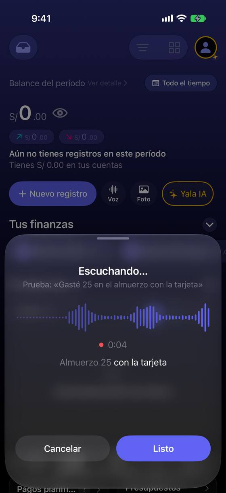
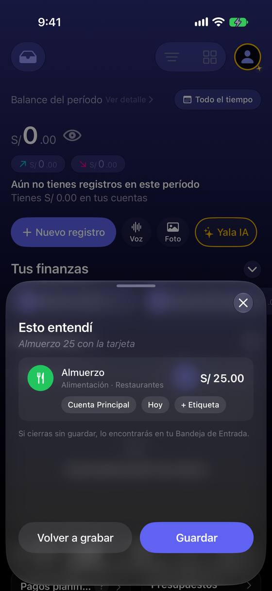
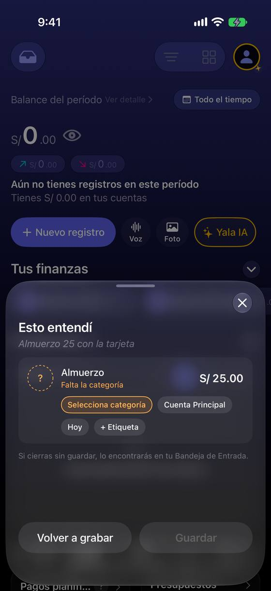
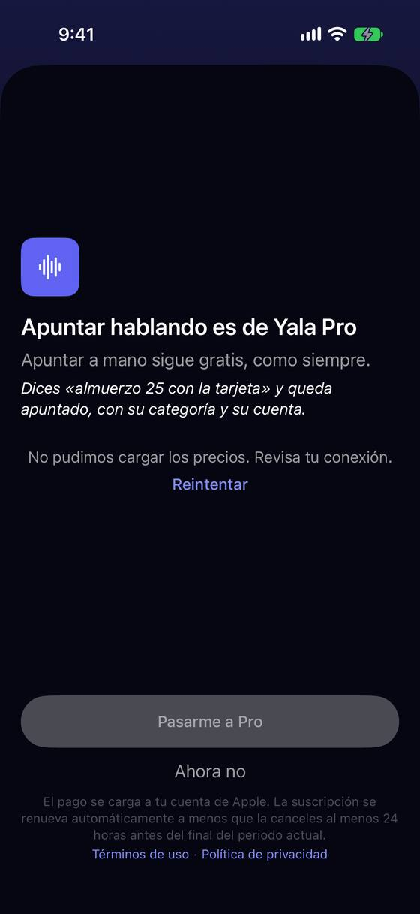
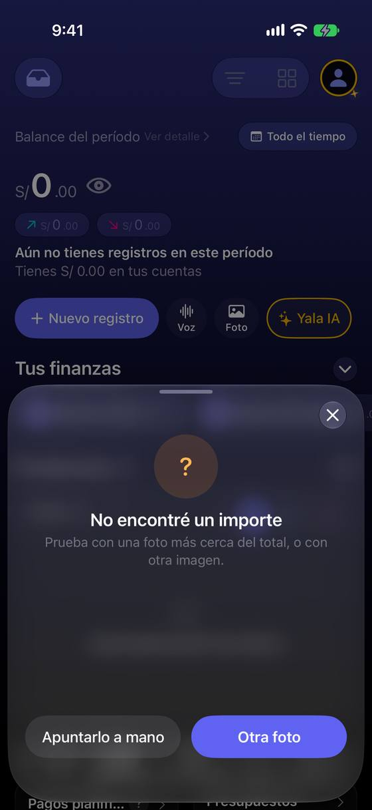

Cuando voz o foto no lo consiguen, «a mano» empieza de cero, y el formulario no tiene puerta a voz ni foto
Hoy
Capturas del simulador (app de origin/2.3, semillas de prueba). Pasos hoy: camino feliz: 3 toques + hablar; con un fallo, «Apuntarlo a mano» + escribirlo todo (≥ 8 gestos).





De dónde sale
- Captura Capturas 30-34: escuchando, «Esto entendí», sin categoría, dos registros: el camino feliz es claro.
- Código
VoiceRecordingView.swift:116-118eImageSelectionView.swift:144-146: «Entrada manual» presentaNewTransactionView()sin nada precargado. - Captura Captura 37: el muro de Pro de voz dice «Apuntar a mano sigue gratis, como siempre» y solo ofrece «Pasarme a Pro» y «Ahora no» (
UpgradePromptSheet.swift:105-110, 266). - Captura Capturas 02 y 36: ni el formulario ni su fila de círculos (Mi parte, Favorito, Recurrente) tienen voz o foto; están solo en el Panel, Registros y Estadísticas.
- Captura Captura 44: la foto sin importe ofrece «Apuntarlo a mano» y «Otra foto».
- Código No hay anuncios de VoiceOver al pasar de «Escuchando» a «Esto entendí» ni en los fallos (sin
AccessibilityNotification.Announcementen las dos hojas).
Las opciones
De 3 a 5 alternativas con el mismo caso. Desliza cada recorrido; el anillo cian marca dónde toca Ana.
«Apuntarlo a mano» abre el formulario con lo que sí se entendió
Cuando la voz o la foto fallan a medias, «Apuntarlo a mano» abre el formulario con lo que sí salió: la frase o el comercio en la descripción, la fecha y la cuenta si se dijeron, y el foco donde falta (el importe).
A favor
- No se pierde lo que la IA sí entendió.
- La salida «a mano» deja de ser un castigo por el fallo.
En contra
- Hay que decidir qué campos se fían de una lectura incompleta.
- Si lo leído estaba mal, ahora hay que borrarlo.
Voz y foto también desde el formulario
En la fila de círculos del formulario se suman «Voz» y «Foto». Desde ahí, lo dictado o leído rellena el mismo formulario en lugar de abrir otra hoja con su propia revisión.
A favor
- Quien ya abrió «Nuevo registro» no tiene que cerrar y volver al Panel para dictar.
- Un solo sitio para revisar: el formulario de siempre.
En contra
- Cinco círculos en la fila: con texto grande no caben (pasan a dos filas).
- Varios registros en un dictado («taxi 12 y café 8») no caben en un formulario: ese caso sigue en la hoja de voz.
El muro de Pro ofrece «Apuntar a mano» de verdad
El muro que ve quien no es Pro ya dice «Apuntar a mano sigue gratis», pero solo trae «Pasarme a Pro» y «Ahora no». Se suma el botón: «Apuntarlo a mano» abre el formulario.
A favor
- Cumple lo que el texto ya dice.
- Cambio pequeño: un botón.
En contra
- Un botón más junto al de compra; hay que cuidar que no compita.
- Solo arregla el camino Free.
Si falta un dato, se escribe en la misma hoja
Cuando la voz entiende el gasto pero no el importe («No escuché un importe»), en vez de un error con dos botones la hoja muestra la tarjeta con el importe vacío y el teclado: Ana dice o escribe solo lo que falta.
A favor
- No obliga a repetir la frase entera por un número.
- Mismo molde que «Falta la categoría», que ya existe.
En contra
- Para la foto, el caso sin importe suele ser una foto mala: ahí sigue sirviendo «Otra foto».
- Toca la máquina de estados de la hoja de voz.
Lado a lado
La última pantalla de cada recorrido, frente a hoy.
Comparación
| Opción | Pasos para el caso (maqueta) | Esfuerzo | Riesgo | Reabre |
|---|---|---|---|---|
| Hoy | camino feliz: 3 toques + hablar; con un fallo, «Apuntarlo a mano» + escribirlo todo (≥ 8 gestos). | — | — | — |
| V1 · «Apuntarlo a mano» abre el formulario con lo que sí se entendió | 1 toque + importe (hoy: 1 toque + escribir todo) | medio | bajo | — |
| V2 · Voz y foto también desde el formulario | 2 toques + hablar | medio-alto | medio | — |
| V3 · El muro de Pro ofrece «Apuntar a mano» de verdad | 1 toque hasta el formulario (hoy: cerrar y tocar «Nuevo registro») | bajo | bajo | — |
| V4 · Si falta un dato, se escribe en la misma hoja | 1 toque + importe | medio | medio | — |
Lente de perfiles
Perfiles simulados, no entrevistas Los siete perfiles de la revisión del usuario nuevo, usados como lentes. riesgo alto de trabarse · medio · bajo.
| Perfil | Hoy | V1 | V2 | V3 | V4 |
|---|---|---|---|---|---|
| P1 · Migrante de Excel | — | — | — | — | — |
| P2 · Principiante abrumado | el muro no le dice cómo seguir gratis | no empieza de cero | más botones | ve la salida | no hay error que entender |
| P3 · Anotador rápido que no lee | repite todo tras un fallo | — | — | — | — |
| P4 · Experto de otra app | busca el micrófono en el formulario | — | lo espera ahí | — | — |
| P5 · Llega por una invitación de grupo | — | — | — | — | — |
| P6 · Varias monedas y tarjeta | moneda dictada | la moneda leída tiene que verse | — | — | — |
| P7 · Texto grande, a veces en iPad | sin anuncios de VoiceOver | — | fila que no cabe | — | teclado dentro de una hoja media |
Recomendación: V1
Que «Apuntarlo a mano» traiga lo entendido convierte cada fallo de voz o foto en un formulario casi hecho, y es el cambio con más efecto por esfuerzo. V3 es casi gratis y cierra una promesa del texto: conviene hacerla con cualquiera. V2 es más ambiciosa; V4 sirve sobre todo para la voz.
Qué decide Jürgen
- ¿«Apuntarlo a mano» precarga lo entendido (V1)? ¿Qué campos se fían de una lectura incompleta?
- ¿El muro de Pro suma «Apuntarlo a mano» (V3)?
- ¿Voz y foto dentro del formulario (V2) o se quedan en el Panel?
Revisión por vistas 2.3 · Nuevo registro. Maquetas en HTML con datos ficticios: no son la app. Pasos contados sobre las maquetas; los de «Hoy», en el simulador o en el código citado.